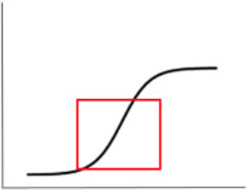
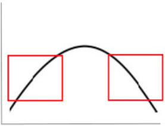
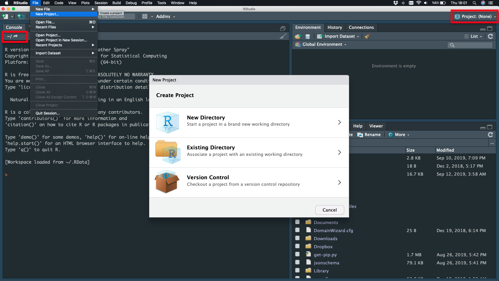

R and RStudio
- What is R?
- R History
- R and CRAN
- What is RStudio?
- RStudio Products
- Fields of Usage
What is R?
R is a language. It is a free software environment for statistical computing and graphics.
It is a GNU project.
UNIX, Windows and MacOS
R version 3.6.1 has been released on 2019-07-05
R History
- Bell Laboratories are used for industrial research and scientific development.
- S is a statistical programming language, by John Chambers, Bell Laboratories, New Jersey, 1975–1976.
- R was created by Ross Ihaka and Robert Gentleman, (statisticians), GNU public license, the University of Auckland, New Zealand, 1992.
/ Powerful but cheap graphics - R Core Team - Open Sources /
Milestones of R
- 1991 - Statistical Models in S (White Book) was published.
- 1997 - The oldest R source was released on The Comprehensive R Archive Network (CRAN).
- 1997 - 3 mirrors and 12 packages.
- 1997 - R becomes an official part of the GNU Project.
- 1999 - “update.packages” and “install.packages” functions.
- 2001 - The first version for Mac OS X.
- 2010 - Support for Windows 64 bit systems.
- 2013 - Support for numeric index values 2^31 and larger on 64 bit systems.
- 2017 - Just-in-time compilation (JIT) of functions and loops (10 to 20 times faster).
almost 20 years, and more than 10,000 R packages
R Download and CRAN
R Homepage - LINK
The Comprehensive R Archive Network (CRAN) - LINK
please choose a location close to you

R
What is RStudio
An Integrated Development Environment (IDE) for R.
RStudio Desktop and RStudio Server
- Developer(s) : RStudio, Inc.
- Initial release : 28 February 2011
- Stable release : 1.2.5001 / 19 September 2019
- Written in : Java, C++, JavaScript
RStudio Desktop


Any Problem About Installation ?

Fields of Usage
- Data analysis
- Interpretation
- Visualization
- Manipulation
- Statistical techniques
- Linear and nonlinear regression (or modelling)
- Classical statistical tests
- Time-series analysis
- Classification and Clustering
- Correlation Analysis
- etc.
Interpretation
The process of making sense out of a collection of data.
Visualization
Data visualization is the graphical representation of information and data.
Visualization

storms
Manipulation
The process of changing data to make it easier to read or be more organized.
R dplyr scheme
Linear and nonlinear Regression (or Modelling)
Linear functions are those whose graph is a straight line.
y = f(x) = a + bx
Regression is a statistical method used to create a model.
Classical statistical tests
Describe the distribution of data and to determine the reliability of a sample drawn from a population.
 
Statistical significance tests is used to inform judgments regarding whether the hypothesis is false or not false
Time-series analysis
Time series is a series of data points in which each data point is associated with a timestamp.

Classification and Clustering
Classification and Clustering are characterize objects into groups by one or more features.
Classification is used in a supervised learning technique which include predefined properties. Clustering is used in unsupervised learning based on group properties.
Correlation analysis
The measure of the strength and direction of the linear relationship between two variables.

Fields of Usage
- Facebook – Update status and social network graph.
- Google – Calculate Return on Investment (ROI), predict the economic activity, improve the efficiency of online advertising.
- New York Times – Prepare graphics before printing.
- Twitter – R is part of Twitter’s Data Science toolbox for sophisticated statistical modeling.

Preview of R Course
A Scientific Calculator
Classes and Data Structures
Create and Manipulation Data
Reading, Writing and Plotting Data
R Programming Structure
Statistics and Probability
Data Analysis Packages
Getting Started
Using the RStudio
R for Basic Math
Assigning Objects
Comments
Open Your RStudio
R You Ready ?!
Using the RStudio
- Preferences
- Project
- File
- Script
- Undo, Redo, Replace and Find
- Tools - New Terminal
- View/Show Screens
Preferences
RStudio - Preferences - Appearance - Editor Theme
New Theme
Functions, Parentheses, Quotation Marks - Material
Project
File - New Project  Don’t Save Current Workspace - New Directory
Project

New Project
Project

Directory Name - Create Project
NEW Project is Ready

File
File - New File - Script
File
File - New File - Script
Undo, Redo, Replace and Find
Edit

Tools - New Terminal
Tools - Terminal - New Terminal

View/Show Screens
View - Zoom and Show …
Script
Save, Run

Environment
Save, Import Dataset, Clean
History
Save, Remove, Clean
Console
Working Directory, Commands, Clean
Files
New Folder, Delete, Rename, Copy
Plot
Before, Zoom, Export, Remove, Clean
Packages
Install, Update
Help
Topic / Word Search

R for Basic Math
addition (+), subtraction (-), multiplication (*), division (/)

R for Basic Math
25 * 4 + 9 / 3 - 56

Assigning Objects
The assignment arrow (<-)

Save Your Script

SUMMARY
R is a language
RStudio is an interface
Script is a passive text
Console is an interactive decoding area
Math is pre-defined
Assigment arrow <-
Comments (hashtag) #


Comments
How to tell R to ignore a part of your code? (#)
Comments